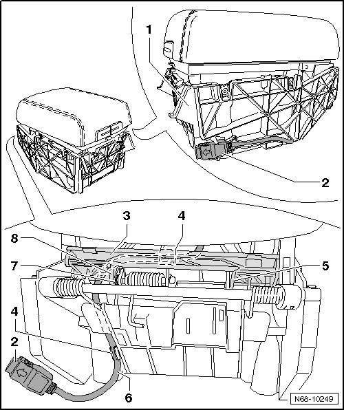
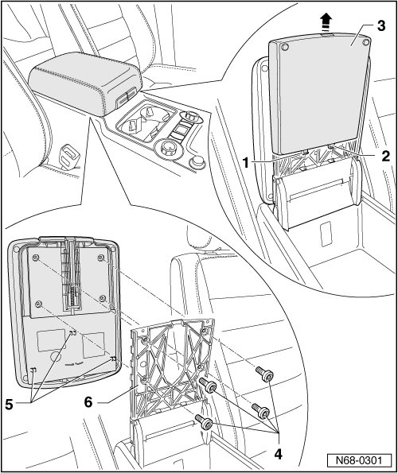
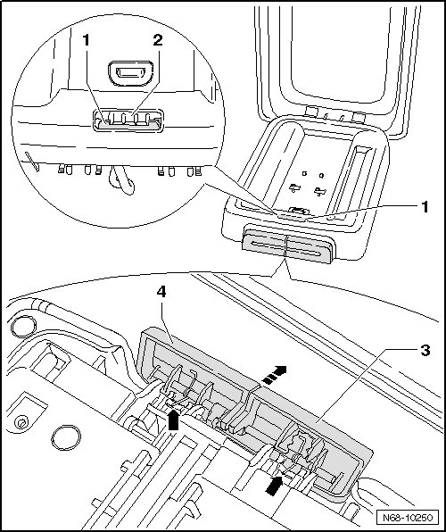
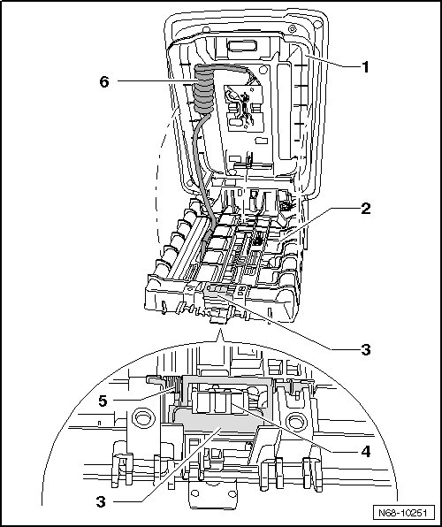

Center Armrest Mount
Center Armrest Mount
Removing
Vehicles with telephone preparation
- Remove center console storage compartment --> [ Center Console Storage Compartment ] Center Console Storage Compartment
- Remove center console --> [ Center Console ] Center Console
- Remove center armrest.--> [ Center Armrest ] Center Armrest
- Loosen connector - 2 - from bracket - 1 -.
- Press tabs - 5 - and - 8 - apart slightly and remove trim - 3 -.
• When installing, ensure spring - 7 - is positioned correctly.
- Remove wiring harness - 6 - from both cable brackets - 4 -.
- Thread wiring harness out of bracket.

Continuation for all vehicles
- Press locking tabs - 1 - and - 2 - to back, opposite the direction of travel.
• Locking tabs - 1 - and - 2 - are not visible when cover - 3 - is installed. Use, for example, a knife blade to release them.
- Slide cover - 3 - upward in - direction of arrow - and disconnect cover from center armrest.
- Remove four bolts - 4 -.
- Separate center armrest from hinge plate - 6 - near fastening locations - 5 -.

- Press locking lever - 1 - down until it is held with the catch - 2 -.
• Buttons - 3 - and - 4 - sit on a shaft and must be removed at the same time.
- Remove buttons - 3 - and - 4 - simultaneously in - direction of arrow - from center armrest mount.
• When installing, ensure springs - 7 - are positioned correctly.

CAUTION!
The locking lever - 3 - is under spring tension and can jump out after removing storage compartment - 1 -.
- Unclip storage compartment - 1 - upward from center armrest mount - 2 -.
• Before installing storage compartment, carefully press locking lever - 3 - under catches - 4 -. Ensure spring - 5 - is seated correctly.
Vehicles with telephone preparation
- Thread wiring harness - 6 - out of center armrest mount.
• Before installation, wiring harness - 6 - must be coated with non-corroding grease in coil area to prevent noise from developing when driving.

- Remove upper part of center armrest --> [ Upper Part of Center Armrest ] Upper Part of Center Armrest
Installing
- Perform the steps used for removal in reverse order.